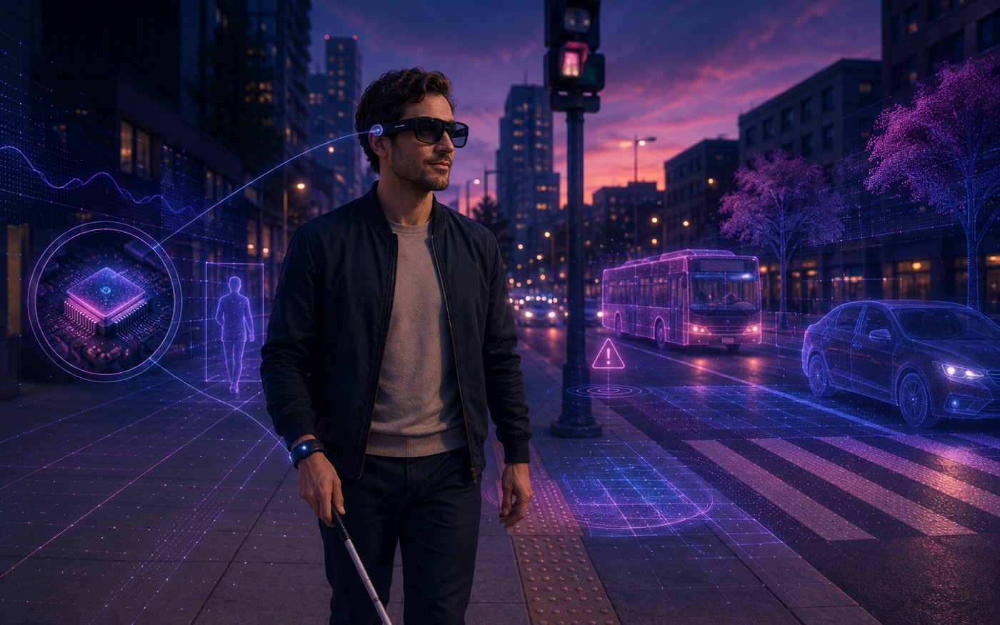

Edge-Native Assistive Vision Agent
An assistive vision-language agent for blind and low-vision users that runs on-device first, uses the cloud only when needed, and says so when it cannot tell.

Overview
This is an assistive AI agent for blind and low-vision users. It describes what is in view, reads labels and text, and answers where things were last seen, and it says so plainly when it cannot tell — the kind of help that bears on independence and safety, not just convenience.
The challenge
Vision-language models make this possible, but two things block dependable real-world use. Running everything in the cloud is expensive, slow, and useless offline while a person is on the move. And these models sometimes state things confidently that aren't true — a wrong distance, a misnamed person — which a blind user has no easy way to catch.
Approach
The system is built around one idea: only say what the evidence supports. Before an answer is spoken, it estimates how likely each tool is to be right on this particular photo. Fixed safety rules run first and cannot be traded for cost, and the cheapest capable tool is tried first. An answer is released only when that estimate clears a threshold for the question's risk level; otherwise the assistant hedges, asks for a better view, or declines. Images are cropped and masked on the device before any cloud call, and people's names are replaced by aliases.
Results
On a benchmark of 3,000 questions from blind users' photos (with a sealed test split held back for the final analysis), reading what earlier tools said raised the cloud model's reliability estimate by 10.1 AUROC points, and the system predicts which questions cannot be answered at 0.80 AUROC. The honest finding is that on blind users' photos none of the tools is accurate enough for a formal error guarantee, so the assistant hedges or declines there; on street frames it certifies at a 10% error limit on 95 of 100 splits. It is a research prototype and has not yet been tested with blind users.
By the numbers
Tech stack & key skills
Core tools, methods and skills demonstrated in this project: